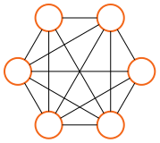
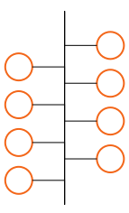

[3] Where are you?¶
Connecting two computers makes them much more useful than two isolated machines. However, their true potential is only unlocked when they can be connected to lots of other computers.
Practical limitations including cost and geographic location make it impossible to directly connect every pair of computers. Instead, devices are distributed across a graph of interconnected networks, which may extend even beyond the scale of a planet.
Whether locally within physical reach or in another continent, an addressing system is needed to identify, locate and route messages so that they reach their intended peers, just like we do with physical locations.
[3.1] Please contact me¶
When only \(2\) devices are involved, one may use a point-to-point connection. In this type of connection, there is only “this side” and “the other side” of the cable. Moreover, when a device wants to communicate with the other end, there is only one link (e.g., one cable) to choose from, so there is no possible confusion. Since we can operate this connection with just \(2\) network cards and \(1\) cable, point-to-point connections are viable for \(N=2\) devices.

If we want to connect \(N > 2\) devices, a naïve option is to connect every device with each other in a complete graph. Now every device needs to handle \(N - 1\) cables to the other devices, but communicating with any other device is as easy as choosing the correct cable and establishing a point-to-point connection.
The main issue with this approach is that the total number of connections is \(N \cdot (N-1) / 2 = O(N^2)\) (more on that in your trusted Discrete Math course). This means that, in order to have \(N=10\) devices connected in this way, you would need for instance \(40\) cables and \(90\) network cards. For \(N=1000\) devices, there would be half a million point-to-point connections, which is already quite unmanageable.
Note
\(O(N^2)\) is notation for a quadratic complexity bound. This is not the same as exponential and should never be confused. (read more...)

There is one trick up our sleeves: data buses, where one or more data lines that are simultaneously connected to multiple devices. This retains the simplicity of point-to-point connections, because each device needs to handle only \(1\) cable and can use it to communicate with all other devices. The cost-effectiveness is also retained, since only \(N\) network cards for \(N\) devices (\(O(N)\)).
The main advantage of data buses is also their main weakness: all devices send and receive data using the same data line, but they cannot do it at the same time because there is only one line. If two or more do, there is a collision that makes data transmission impossible while it lasts.
Note
As computer networking was developed, people experimented with many alternatives to the bus topology. One curious example is Token Ring, where devices are connected around a circle, and messages are passed around in a single direction.
In practice, it is not trivial to implement a bus technology where new devices can be added over time. Historically, this was sometimes done by physically piercing the main bus cable, and adding a new cable towards the new computer being connected. Later on, this was simplified with devices called hubs. They worked similarly, but they offered pre-built ports and removable connectors. Nowadays, hubs have been replaced by switches. Switches offer the functionality of a bus, connecting every device with each other, and also prevent collisions. For obvious reasons, structuring connections around a switch is called a star topology.
Exercise 3.1
What is needed in a switch that is not needed in a hub?

Bus topologies work great at local scales, and are extensively employed in local area networks (LANs). However, it is not cost-effective, (sometimes not even physically possible) when devices are far apart. Instead, devices can be organized in separate LANs, each one conceptually a bus, and then these separate LANs can be connected using cheaper, feasible point-to-point connections. Considered together, these devices would then form a wide-area network (WAN).

[3.2] I need to find you¶
Once again, the main advantage of data buses is also their main weakness: all devices send and receive data using the same data line. Even if collisions don’t happen, every message sent into the bus is received by all devices. However, what we actually want is for our message to reach its destination, and only its destination. Let’s call this the find-my-device problem.
The find-my-device problem is not unique of buses or LANs. On the contrary, it becomes very important when we consider WANs, where not all devices are directly interconnected. In this case, we need to make sure we can route our messages between different LANs, and that they reach their destination.
Surprisingly, not even point-to-point connections are safe from the find-my-device problem. Assuming devices A and B are connected that way, two different programs may want to exchange information at the same time, e.g., some alarm control software and a music streaming app. In this scenario, you want the client and server of the alarm monitoring service to communicate with each other but not with the music streaming service, and vice-versa.
The most common solution to this problem is to use identifiers that let us differentiate between devices or even between running processes inside an operating system (OS). Some of these identifiers are referred to as addresses, precisely because they are used to find and reach a remote device.
Addresses are typically numerical identifiers, that is, just a number. As such, they can be expressed in different bases, including decimal and hexadecimal. These numbers are drawn from a predefined set, and the choice of that set determines the maximum number of elements we can uniquely identify.
Note
Addresses expressed as d8:43:ae:61:ed:f1 or 192.168.1.1 (as it will be seen later in the course) are also numbers we could have expressed as 237785200061937 and 3232235777, respectively (which is not as convenient).
Exercise 3.2
How many elements can be uniquely identified (at most) with an address we express using 5 bits? How about 10? How about 20? Express the general solution mathematically.
Exercise 3.3
Suppose there are \(1000\) machines in a LAN. How many address bits are needed? How about \(800\) machines? And \(1100\)? Express the general solution mathematically.
Note
In 2019, we run out of Internet (v4) addresses. Whoops!
[3.3] How do I get there?¶
In many scenarios, multiple addresses are needed to perform the desired end-to-end communication. For instance, we may need to identify a single device within a LAN, and that LAN within a WAN. Sometimes, we will need to identify a process (a running program) within that device. This is not unlike someone paying you a visit in person:

Whatever addressing system we use, it must contain enough information to locate and reach the destination, i.e., to route our messages through the graph of connections. The process of routing involves multiple steps or “jumps” across networks until the destination LAN is reached.
The name router refers to a type of network device whose job is to forward these messages across networks. These devices must contain enough information so that, when handed a message with a destination address, they can decide what network interface to use. In turn, non-router devices only need to be configured so that they can reach the next router.
Note
At home, your router typically also plays the role of a switch, but those are different concepts.
Exercise 3.4
This figure represents a handful of devices and their physical connections. These devices can communicate only by sending messages through those connections. Notwithstanding, 3 wants to send a message to 7.

-
Can you identify any devices likely to be acting as a switch? And as a router?
-
What’s the minimum number of messages sent so that 3 can contact 7, and 7 can reply to 3? List them in the order they are produced.
-
What information needs to be included in those messages so that the communication 3 \(\leftrightarrow\) 7 may take place?
Swimlane diagrams like the one below are used to represent the interactions (e.g., message exchange) between actors (e.g., network devices). In them, the vertical axis represents time, which is invaluable to identify cause-effect relations.

Exercise 3.5
Based on your answer to Ex.3.4, produce a swimlane diagram that represents the message exchanges. For each message (e.g., above the arrows), include the addressing information present in it.